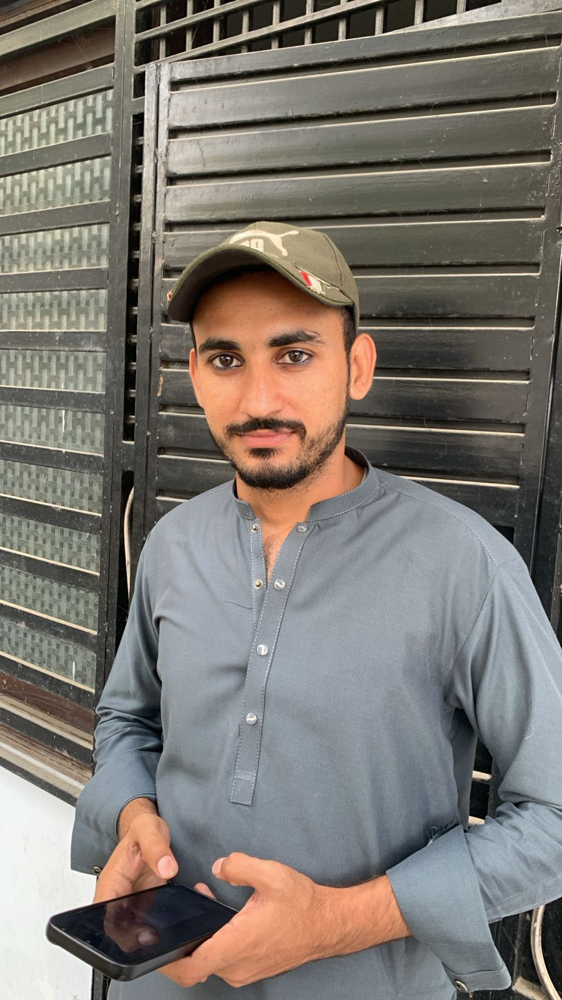
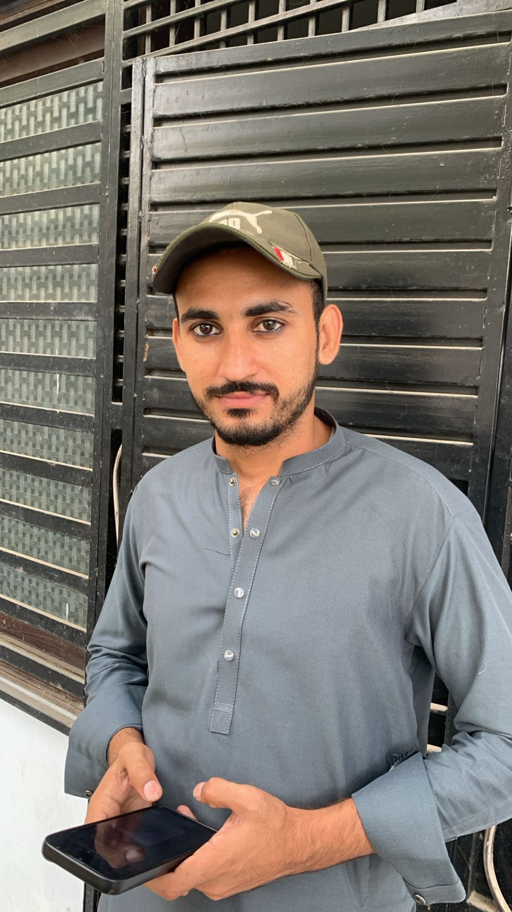

My name is faseeh. i live in karachi. i am 20th year old.my father name mohsan naqvi.
my father is a bussiness man.
my mother is a house wife. i have five brothers and two sisters.
i am the youngest in my family.i have done my matric
from high school and i done my inter from scicence group.
1.my Hobby is playing cricket in free time.
2.i like enjoyment with family friends.
3.collecting activities.
4.ilike to play video games.
5.i like to watch movies.
6.i like to listen music.
 


| Subject | Obtained Marks | Total Marks | Grade | Remarks |
|---|---|---|---|---|
| English | 85 | 100 | A | Excellent |
| Mathematics | 90 | 100 | A+ | Outstanding |
| Physics | 80 | 100 | A | Very Good |
| Chemistry | 78 | 100 | B+ | Good |
| Biology | 88 | 100 | A | Excellent |
| Urdu | 82 | 100 | A | Very Good |
| Islamiyat | 45 | 50 | A | Good |
| Pakistan Studies | 48 | 50 | A+ | Excellent |
| subjects | Obtained marks | Total marks | Grade | Remarks |
|---|---|---|---|---|
| English | 78 | 100 | B+ | Good |
| urdu | 80 | 100 | A | Very Good |
| Physics | 85 | 100 | A | Excellent |
| Chemistry | 82 | 100 | A | Very Good |
| Mathematics | 88 | 100 | A+ | Outstanding |
| Islamiyat | 45 | 50 | A | Good |
| Pakistan Studies | 47 | 50 | A | Very Good |
In conclusion, I am a 20-year-old individual named Faseeh, living in Karachi with a large family. I have a passion for various hobbies, including playing cricket, enjoying time with family and friends, and engaging in video games and movies. My favorite things range from cars to storybooks, gaming systems, and delicious food like Zinger burgers. I have also shared useful links that I frequently visit for information and learning. My academic journey includes completing matriculation and intermediate studies with commendable marks in subjects like English, Mathematics, Physics, Chemistry, Biology, Urdu, Islamiyat, and Pakistan Studies. Overall, I am a person who values education, family, and personal interests.